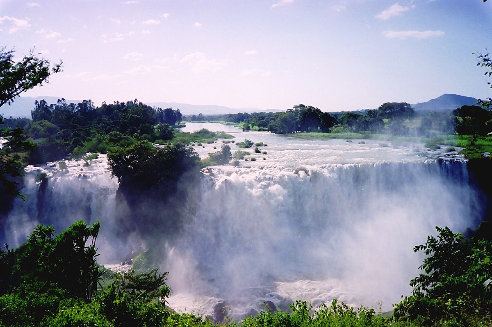

Amanuel Degife a twenty years old adult
from green and beautiful southern part of
Ethiopia. I reflect varied a personality including
ambitious, the qualities of generous and thoughtfulness and
oddly carelessness. I am also a well determined and vigorous
individual, yet pleasantly calm. I fight for what I desire and
believe in, and doing it through God because nothing great comes east with God everything is possible.
I am fully time student, motivated by my love for learning and
succeeding as I strived to become outstanding and successful man in
today’s society. From highschool to the university I was always attracted
to the construction industry especially in architecture designing. And for that matter I
joined EIABC campus to study architecture. I have a dream to be a productive architect.
The country is not that much advanced in this area. By standing with this generation I will do may best to do a meaningful influence in this industry.